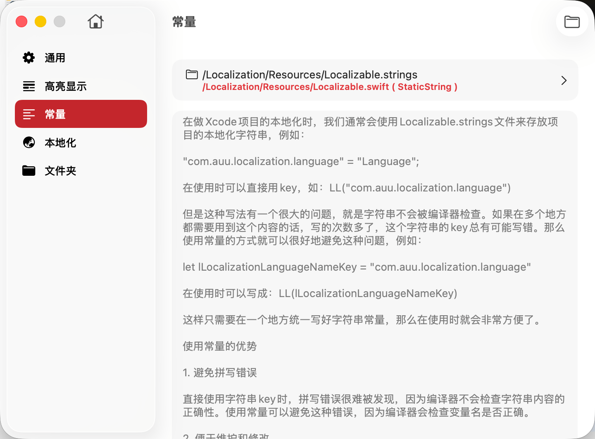

常量配置功能允许您为项目中的每个 .strings 文件关联一个常量文件，并定义常量的生成模式。通过使用常量代替硬编码的字符串 Key，可以显著提升代码质量、降低错误率，并提高开发效率。
在 Xcode 项目的本地化开发中，传统方式是直接使用字符串 Key 来引用本地化内容：
// Localizable.strings
"com.auu.localization.language" = "Language";
// 代码中直接使用字符串 Key
let text = NSLocalizedString("com.auu.localization.language", comment: "")
// 或使用自定义宏
let text = LL("com.auu.localization.language")这种方式存在的问题：
TransX 支持自动生成和管理常量文件，将每个本地化 Key 定义为一个类型安全的常量：
// 自动生成的常量文件 LocalizationConstants.swift
let lLocalizationLanguageKey = "com.auu.localization.language"
let lSettingsTitleKey = "com.auu.settings.title"
let lErrorNetworkFailureKey = "com.auu.error.networkFailure"
// 代码中使用常量
let text = LL(lLocalizationLanguageKey) // ✅ 类型安全，有代码补全Objective-C 示例：
// 自动生成的常量文件 LocalizationConstants.h
extern NSString * const kLocalizationLanguageKey;
extern NSString * const kSettingsTitleKey;
extern NSString * const kErrorNetworkFailureKey;
// LocalizationConstants.m
NSString * const kLocalizationLanguageKey = @"com.auu.localization.language";
NSString * const kSettingsTitleKey = @"com.auu.settings.title";
NSString * const kErrorNetworkFailureKey = @"com.auu.error.networkFailure";
// 代码中使用常量
NSString *text = LL(kLocalizationLanguageKey); // ✅ 类型安全问题示例：
// ❌ 拼写错误，编译器不会报错，运行时才发现问题
let text1 = LL("com.auu.localization.langauge") // "language" 拼成了 "langauge"
let text2 = LL("com.auu.localziation.language") // "localization" 拼成了 "localziation"使用常量后：
// ✅ 编译器会检查常量名，拼写错误立即发现
let text = LL(lLocalizationLanguageKey) // IDE 会提示拼写错误的常量名问题示例：
// ❌ 如果需要修改 Key，必须在多个文件中手动查找替换
// File1.swift
let text = LL("com.auu.localization.language")
// File2.swift
let text = LL("com.auu.localization.language")
// File3.swift
let text = LL("com.auu.localization.language")使用常量后：
// ✅ 只需要在 .strings 文件中修改 Key，常量文件会自动更新
// 所有引用常量的地方无需修改
let text = LL(lLocalizationLanguageKey) // 自动使用新的 Key对比：
// ❌ 长字符串降低可读性
showAlert(
title: LL("com.auu.settings.privacy.deleteAccount.confirmDialog.title"),
message: LL("com.auu.settings.privacy.deleteAccount.confirmDialog.message"),
confirm: LL("com.auu.settings.privacy.deleteAccount.confirmDialog.confirmButton"),
cancel: LL("com.auu.settings.privacy.deleteAccount.confirmDialog.cancelButton")
)
// ✅ 使用常量更清晰
showAlert(
title: LL(lDeleteAccountConfirmTitleKey),
message: LL(lDeleteAccountConfirmMessageKey),
confirm: LL(lDeleteAccountConfirmButtonKey),
cancel: LL(lDeleteAccountCancelButtonKey)
)所有本地化 Key 以常量形式集中定义在一个或多个文件中，便于：
问题示例：
// ❌ 团队成员可能因记忆错误使用不同的 Key
// 开发者 A
let text = LL("app.settings.language")
// 开发者 B（记错了前缀）
let text = LL("com.app.settings.language")
// 开发者 C（记错了层级）
let text = LL("app.language.settings")使用常量后：
// ✅ 所有人都使用同一个常量，确保一致性
let text = LL(lSettingsLanguageKey)使用常量后，可以享受现代 IDE 的各种智能特性：
// ❌ 引用了不存在的 Key，运行时才发现
let text = LL("non.existent.key") // 编译通过，但运行时显示 Key 本身
// ✅ 引用了不存在的常量，编译时就报错
let text = LL(nonExistentKey) // ❌ 编译错误：Use of unresolved identifier 'nonExistentKey'在 TransX 中，您可以为每个 .strings 文件配置对应的常量文件：
配置项说明：
常量文件路径：
文件头注释：
1. 小驼峰 + Key 后缀（推荐）：
let settingsLanguageKey = "app.settings.language"
let errorNetworkKey = "app.error.network"
let buttonConfirmKey = "app.button.confirm"2. 带前缀的小驼峰：
let lSettingsLanguage = "app.settings.language"
let lErrorNetwork = "app.error.network"
let lButtonConfirm = "app.button.confirm"3. 枚举命名空间（大型项目推荐）：
enum LocalizationKey {
static let settingsLanguage = "app.settings.language"
static let errorNetwork = "app.error.network"
static let buttonConfirm = "app.button.confirm"
}
// 使用
let text = LL(LocalizationKey.settingsLanguage)4. 分组枚举（超大型项目推荐）：
enum LocalizationKey {
enum Settings {
static let language = "app.settings.language"
static let privacy = "app.settings.privacy"
}
enum Error {
static let network = "app.error.network"
static let permission = "app.error.permission"
}
}
// 使用
let text = LL(LocalizationKey.Settings.language)1. k 前缀 + 驼峰命名（推荐）：
// .h 文件
extern NSString * const kSettingsLanguageKey;
extern NSString * const kErrorNetworkKey;
// .m 文件
NSString * const kSettingsLanguageKey = @"app.settings.language";
NSString * const kErrorNetworkKey = @"app.error.network";2. 带项目前缀的驼峰命名：
// AUU 是项目前缀
extern NSString * const kAUUSettingsLanguageKey;
extern NSString * const kAUUErrorNetworkKey;3. 宏定义（不推荐，仅用于旧项目兼容）：
#define SETTINGS_LANGUAGE_KEY @"app.settings.language"
#define ERROR_NETWORK_KEY @"app.error.network"在项目初期确定常量命名风格，并在整个项目中保持一致：
// ✅ 推荐：统一使用 Key 后缀
let settingsLanguageKey = "..."
let settingsThemeKey = "..."
// ❌ 不推荐：命名风格不一致
let settingsLanguageKey = "..."
let settingsTheme = "..."
let lButtonConfirm = "..."对于大型项目，按功能模块对常量进行分组：
// MARK: - User Profile
let profileTitleKey = "..."
let profileNameKey = "..."
// MARK: - Settings
let settingsTitleKey = "..."
let settingsLanguageKey = "..."
// MARK: - Errors
let errorNetworkKey = "..."
let errorPermissionKey = "..."常量文件应该由 TransX 自动生成和维护：
// ⚠️ Do not edit this file manually!
// Any changes will be overwritten.如果需要自定义常量，创建一个单独的文件：
// CustomLocalizationKeys.swift（手动维护）
let myCustomKey = "custom.key"原因：
定期检查并移除代码中不再使用的本地化内容：
// 使用 IDE 的"查找引用"功能
// 如果某个常量没有任何引用，考虑从 .strings 文件中删除对应的 Key在项目文档中说明：
| 对比项 | 手动管理字符串 Key | 使用常量（TransX 自动生成） |
|---|---|---|
| 拼写错误检测 | ❌ 运行时才发现 | ✅ 编译时检测 |
| IDE 代码补全 | ❌ 无 | ✅ 有 |
| 重构支持 | ❌ 手动查找替换 | ✅ IDE 自动重构 |
| 类型安全 | ❌ 字符串类型 | ✅ 常量类型 |
| 代码可读性 | ❌ 较差（长字符串） | ✅ 较好（语义化常量名） |
| 维护成本 | ❌ 高（手动同步） | ✅ 低（自动生成） |
| 团队协作 | ❌ 易出错 | ✅ 一致性好 |
| 学习曲线 | ✅ 简单直接 | ⚠️ 需要配置 |
使用常量代替硬编码的字符串 Key 是本地化开发的最佳实践。TransX 的常量自动生成功能可以：
对于任何规模的项目，特别是团队协作的项目，强烈建议启用 TransX 的常量管理功能，让工具自动处理这些机械的、容易出错的工作，开发人员可以更专注于业务逻辑的实现。